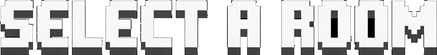
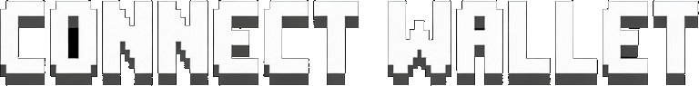

On mobile you can play Free rooms only with touch controls — drag to move, double-tap to split.
Paid rooms require a PC/Mac.
🤖 Playing against bots
2 KILLS TO PENTAKILL
IN GAME:$PILLY
×
DEPOSIT
In wallet—
In GAME—
×
WITHDRAW
In GAME—
×
Not enough $PILLY
Entry—
In GAME—
You need—
DAILY REWARDS
YOUR REWARDS0$PILLY
ARENA PRIZES0$PILLY
×
STAKING
Reward pool
In rewards vault—
Distributing / day—
Total staked—
Est. APR—
Your position
Staked—
Earned (unclaimed)—
How you earn. Everything the house keeps goes into the reward
pool: exit fees, the arcade cut, entries from players who
disconnect and never come back, unclaimed pot shares and the skin
shop. That pool drips into stakers by the second, split by how much
each one has locked — no tokens are minted, it is the game's own
income coming back.
Why the 7 days.UNSTAKE starts a 7-day wait and those
tokens stop earning immediately. Without it, dropping in right
before a payout and leaving right after would cost nothing, and the
yield would go to whoever held nothing — paid by whoever did.
COMPOUND puts what you earned back into your stake, so it
earns too. CLAIM sends it to your wallet instead. Your
principal is never locked by anyone but the timer: no permissions,
no approvals.
×
Daily leaderboard
Today's prize pool
Pool right now—
Players in the list—
Rewards actually paid
YOU WON
0 $PILLY
LEAVE ARENA?
You will lose your current mass and progress. Are you sure?
NOTICE
PRACTICE VS BOTS · NO WAGER
REAL PLAYERS · REAL ROOMS
1V1 · 2V2 · 3V3 · JOIN OR CREATE ROOMS
GROUPS · INVITES · WHISPERS
×
ENTER YOUR NAME

ROOM PRICES BY ORACLE
ROOM INFO
HEADS UP
SETTINGS
Graphics Quality
Map Theme

FEATURES
ARCADE FEATURES
ROGUELIKE MODE: EAT FOOD, VIRUSES & ENEMIES LIKE CLASSIC, BUT WITH SKILLS.
DRAFT NEW POWERS EVERY 30s TO DOMINATE THE ARENA.
$PILLY ECONOMY: THE TOP 10 PLAYERS SPLIT THE MATCH REVENUE.
(PRACTICE FREE HERE UNLIMITED TIMES BEFORE WAGERING)
SKILLS DATABASE
SELECT A SKILL
Description area...
✨ SECRET SKIN UNLOCKED ✨
Clear text to revert to colors
CLASSIC ECONOMY
PURE SKILL: EAT CELLS, SPLIT (SPACE), FARM VIRUSES (GAIN MASS, GET SPLIT). NO SKILLS.
OBJECTIVE: ELIMINATE 5 PLAYERS (PENTAKILL) TO MAXIMIZE PROFIT.
$PILLY ECONOMY:
KILL 1 = BREAK EVEN (Recover Entry)
KILL 5 = MAX ROI ($$$)
(PRACTICE FREE HERE UNLIMITED TIMES BEFORE WAGERING)
ANTI-COMBAT LOG: STAND STILL 5s TO LOGOUT SAFELY.
15 MIN TIME LIMIT: WHEN IT RUNS OUT, IF YOU'RE STILL ALIVE YOU CASH OUT AUTOMATICALLY — THE SAME PENALTY FEE ABOVE STILL APPLIES, SO KILLS PAY OFF EITHER WAY.
THE SPLIT (SPACE): Essential for killing. You launch half your mass forward to eat enemies or escape. High risk, high reward. You can split into up to 16 pieces.